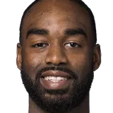

His best final NBA finish was #10 of 30, with the 2012-13 Los Angeles Clippers. In his 83 games for 3 teams over 4 seasons they went 21–62 (25.3%), −41 games under .500, with an average final finish of 21.2.
Jump to: Record by opponent · Season by season · Teammate help
Compare DaJuan Summers with…
Final NBA finish, season by season
Title Finals Other playoffs Missed playoffs. #1 = champion; the dashed line is last place that season. Each point opens that season's final standings.
All 30 teams ranked in 2012-13, his best finish (#10)Teammate help
 Chris Paul6.51 season
Chris Paul6.51 season Blake Griffin4.01 season
Blake Griffin4.01 season Jonas Jerebko0.11 season
Jonas Jerebko0.11 season
Career
Career records (W–L, W − L, with and without) include 2026-27 games through Nov. 24, 2026; season counts and finishes are through 2025-26. Each card opens its board in the same scope. How we count.

Latest completed seasons
- 2012-13·LA Clippers·#10 of 3056–26 · Lost in the first round 2–4 to
 Memphis
Memphis - 2011-12·
 New Orleans·#27 of 3021–45 · Missed playoffs
New Orleans·#27 of 3021–45 · Missed playoffs - 2010-11·
 Detroit·#24 of 3030–52 · Missed playoffs
Detroit·#24 of 3030–52 · Missed playoffs
Season by season
Newest first; every header sorts. Final NBA finish is the team's rank among all teams that season (#1 = champion) and opens that season's standings. "Without him" uses the team-season window; the span line counts only the games between his first and last game for the team.
| 2012-13 | LA Clippers4th West | #10 of 30 | 56–26 68.3% | Lost 1st round 2–4 | 2 of 82 | 1–1 50.0% | 55–25 68.8%span: N/A, gap N/A | −18.8 |
| 2011-12 | #27 of 30 | 21–45 31.8% | Missed playoffs | 15 of 66 | 2–13 13.3% | 19–32 37.3%span: 0–1, gap +13.3 | −23.9 | |
| 2010-11 | #24 of 30 | 30–52 36.6% | Missed playoffs | 22 of 82 | 5–17 22.7% | 25–35 41.7%span: 25–34, gap −19.6 | −18.9 | |
| 2009-10 | #24 of 30 | 27–55 32.9% | Missed playoffs | 44 of 82 | 13–31 29.5% | 14–24 36.8%span: 12–22, gap −5.7 | −7.3 |
On/off, starts and close games
From the lineup data, 1996-97 on. On/off is net points per 100 possessions with him on the floor minus off, a different unit from the win-rate gaps. Started and off the bench are team records in those games; close games are those within 5 points in the last 5 minutes with him on the floor.
| 2012-13 | LA Clippers | −7.4 | N/A | 1–1 50.0% | N/A |
| 2011-12 | −2.4 | 0–6 0.0% | 2–7 22.2% | 0–2 0.0% | |
| 2010-11 | +7.3 | 0–1 0.0% | 5–16 23.8% | 2–3 40.0% | |
| 2009-10 | −4.3 | N/A | 13–31 29.5% | 2–7 22.2% |
Teammate help by season
Help this season = Teammates Score points for honors won that season by teammates who shared a game with him, with every teammate that adds to it. Only honors won in that same season count. How help works.
- 2012-13LA Clippers
Chris Paul All-NBA 1stAll-StarAll-Def 1stAll-Star MVP6.52 gBlake Griffin All-NBA 2ndAll-Star42 g
Help this season: 10.5 = 6.5 Chris Paul + 4 Blake Griffin
Other teammates (no honors that season): Willie Green 2 g, Matt Barnes 2 g, Caron Butler 2 g, Jamal Crawford 2 g, Maalik Wayns 2 g, DeAndre Jordan 2 g, Ryan Hollins 2 g, Lamar Odom 2 g, Grant Hill 1 g, Chauncey Billups 1 g
- 2011-12New OrleansHelp this season: 0, no honored teammate
- 2010-11Detroit
 Greg Monroe All-Rookie 2nd0.12521 g
Greg Monroe All-Rookie 2nd0.12521 g
Help this season: 0.125 = 0.125 Greg Monroe
Other teammates (no honors that season): Ben Gordon 22 g, Charlie Villanueva 20 g, Austin Daye 19 g, Tayshaun Prince 18 g, Tracy McGrady 17 g, Will Bynum 17 g, Chris Wilcox 16 g, Rodney Stuckey 16 g, Jason Maxiell 16 g, Ben Wallace 13 g, Richard Hamilton 10 g
- 2009-10Detroit
Jonas Jerebko All-Rookie 2nd0.12544 g
Help this season: 0.125 = 0.125 Jonas Jerebko
Other teammates (no honors that season): Austin Daye 43 g, Charlie Villanueva 41 g, Jason Maxiell 40 g, Will Bynum 37 g, Rodney Stuckey 36 g, Ben Wallace 34 g, Ben Gordon 31 g, Kwame Brown 31 g, Chucky Atkins 24 g, Tayshaun Prince 21 g, Richard Hamilton 17 g, Chris Wilcox 15 g
Record against each opponent
Regular season, through 2025-26 (2026-27 games not included): 83 games, 21–62, against 30 franchises.
Grouped by franchise (named as today); game lists keep each team's name that season. Filters and the tab are kept in the URL, so a filtered view can be shared.
| Games list | |||||||
|---|---|---|---|---|---|---|---|
| 6 | 1–5 | 16.7% | −4 | N/A | 2009-10 to 2011-12 | ||
| 6 | 0–6 | 0.0% | −6 | N/A | 2009-10 to 2010-11 | ||
| 5 | 4–1 | 80.0% | +3 | N/A | 2009-10 to 2012-13 | ||
| 4 | 1–3 | 25.0% | −2 | N/A | 2009-10 to 2010-11 | ||
| 4 | 0–4 | 0.0% | −4 | N/A | 2009-10 to 2011-12 | ||
| 4 | 0–4 | 0.0% | −4 | N/A | 2009-10 to 2011-12 | ||
| 4 | 3–1 | 75.0% | +2 | N/A | 2009-10 to 2010-11 | ||
| 3 | 1–2 | 33.3% | −1 | N/A | 2009-10 | ||
| 3 | 0–3 | 0.0% | −3 | N/A | 2009-10 | ||
| 3 | 2–1 | 66.7% | +1 | N/A | 2009-10 to 2011-12 | ||
| 3 | 0–3 | 0.0% | −3 | N/A | 2009-10 to 2010-11 | ||
| 3 | 1–2 | 33.3% | −1 | N/A | 2009-10 to 2011-12 | ||
| 3 | 1–2 | 33.3% | −1 | N/A | 2009-10 to 2011-12 | ||
| 3 | 0–3 | 0.0% | −3 | N/A | 2009-10 to 2010-11 | ||
| 3 | 0–3 | 0.0% | −3 | N/A | 2009-10 to 2011-12 | ||
| 3 | 0–3 | 0.0% | −3 | N/A | 2009-10 | ||
| 3 | 1–2 | 33.3% | −1 | N/A | 2009-10 to 2010-11 | ||
| 2 | 1–1 | 50.0% | 0 | N/A | 2010-11 | ||
| 2 | 0–2 | 0.0% | −2 | N/A | 2009-10 | ||
| 2 | 1–1 | 50.0% | 0 | N/A | 2010-11 to 2011-12 | ||
| 2 | 1–1 | 50.0% | 0 | N/A | 2009-10 | ||
| 2 | 0–2 | 0.0% | −2 | N/A | 2009-10 to 2010-11 | ||
| 2 | 0–2 | 0.0% | −2 | N/A | 2011-12 | ||
| 2 | 0–2 | 0.0% | −2 | N/A | 2011-12 | ||
| 1 | 0–1 | 0.0% | −1 | N/A | 2011-12 | ||
| 1 | 1–0 | 100.0% | +1 | N/A | 2009-10 | ||
| 1 | 0–1 | 0.0% | −1 | N/A | 2010-11 | ||
| 1 | 1–0 | 100.0% | +1 | N/A | 2010-11 | ||
| 1 | 1–0 | 100.0% | +1 | N/A | 2011-12 | ||
| 1 | 0–1 | 0.0% | −1 | N/A | 2012-13 |
Rows add up to his career record in his games. A playoff series counts when he played in it; early round-robin games show as games only. How we count.
Arrival and departure
Team wins per 82 games the season before he arrived vs his first season there, and his last season vs the season after he left. He leaves a team only when his next season with games is for another team (or he never plays again); whole seasons he missed and came back from are one "Missed" row with the team's record without him. Per 82 so short seasons compare fairly. These are team records, not a measure of what he did.
| Left | LA Clippers | after 2012-13 | 2012-13: 56–26 56.0 per 82 | 2013-14: 57–25 57.0 per 82 without him | +1.0 wins |
| Arrived | LA Clippers | 2012-13 | 2011-12: 40–26 49.7 per 82 | 2012-13: 56–26 56.0 per 82 | +6.3 wins |
| Left | after 2011-12 | 2011-12: 21–45 26.1 per 82 | 2012-13: 27–55 27.0 per 82 without him | +0.9 wins | |
| Arrived | 2011-12 | 2010-11: 46–36 46.0 per 82 | 2011-12: 21–45 26.1 per 82 | −19.9 wins | |
| Left | after 2010-11 | 2010-11: 30–52 30.0 per 82 | 2011-12: 25–41 31.1 per 82 without him | +1.1 wins | |
| Debut | 2009-10 | 2008-09: 39–43 39.0 per 82 | 2009-10: 27–55 27.0 per 82 | −12.0 wins |
Best duos
Team record in regular-season games both played, top 10 by win %, at least 50 games together.
 Charlie Villanueva
17–44 27.9%
Charlie Villanueva
17–44 27.9% Austin Daye
17–45 27.4%
Austin Daye
17–45 27.4% Will Bynum
14–40 25.9%
Will Bynum
14–40 25.9%- Jason Maxiell 14–42 25.0%
 Ben Gordon
13–40 24.5%
Ben Gordon
13–40 24.5% Rodney Stuckey
12–40 23.1%
Rodney Stuckey
12–40 23.1%
With and without his teammates
His 12 teammates with the most regular-season games together. "Together" is the team's record in the games both played for it; "Without him" is the team's record in the games DaJuan Summers played for that team while the teammate was on it (between the teammate's first and last game for the team, the appearance span) and the teammate did not play. Fewer than 20 games without him: no gap. Games through Nov. 24, 2026. How we count.
- Austin DayeDetroit 2009-10 to 2010-11
- Together
- 17–45 27.4%
- Without him
- 1–3 25.0%
- Gap
- Too few games without him
- Charlie VillanuevaDetroit 2009-10 to 2010-11
- Together
- 17–44 27.9%
- Without him
- 0–4 0.0%
- Gap
- Too few games without him
- Jason MaxiellDetroit 2009-10 to 2010-11
- Together
- 14–42 25.0%
- Without him
- 4–6 40.0%
- Gap
- Too few games without him
- Will BynumDetroit 2009-10 to 2010-11
- Together
- 14–40 25.9%
- Without him
- 3–8 27.3%
- Gap
- Too few games without him
- Ben GordonDetroit 2009-10 to 2010-11
- Together
- 13–40 24.5%
- Without him
- 4–8 33.3%
- Gap
- Too few games without him
- Rodney StuckeyDetroit 2009-10 to 2010-11
- Together
- 12–40 23.1%
- Without him
- 5–8 38.5%
- Gap
- Too few games without him
 Ben WallaceDetroit 2009-10 to 2010-11
Ben WallaceDetroit 2009-10 to 2010-11- Together
- 13–34 27.7%
- Without him
- 4–14 22.2%
- Gap
- Too few games without him
- Jonas JerebkoDetroit 2009-10
- Together
- 13–31 29.5%
- Without him
- N/A N/A
- Gap
- Too few games without him
 Tayshaun PrinceDetroit 2009-10 to 2010-11
Tayshaun PrinceDetroit 2009-10 to 2010-11- Together
- 9–30 23.1%
- Without him
- 9–18 33.3%
- Gap
- 10.3 points higher
- Kwame BrownDetroit 2009-10
- Together
- 9–22 29.0%
- Without him
- 2–7 22.2%
- Gap
- Too few games without him
- Chris WilcoxDetroit 2009-10 to 2010-11
- Together
- 7–24 22.6%
- Without him
- 5–6 45.5%
- Gap
- Too few games without him
- Richard HamiltonDetroit 2009-10 to 2010-11
- Together
- 5–22 18.5%
- Without him
- 9–21 30.0%
- Gap
- 11.5 points higher